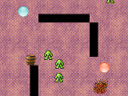
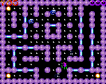
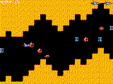
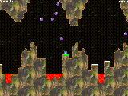
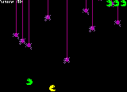
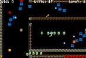
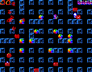
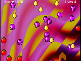

 Billiard Berzerk: JAR (299K), JAD.
 Pub Man: JAR (55K), JAD.
 Space Run: JAR (47K), JAD.
 Caverns of Fire: JAR (164K), JAD.
 Munchies: JAR (70K), JAD.
 Dungeons of Hack: JAR (59K), JAD.
 Matrix Miner: JAR (268K), JAD.
 Ogrotron: JAR (308K), JAD.